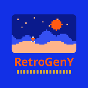

RetroGenY
Android スマホでゲームボーイアドバンス、ゲームボーイ、ゲームボーイカラーのゲームを遊び、友だちと通信できます。
- Wi-Fi・Bluetooth・USB で友だちと通信プレイ
- 9,000 以上の内蔵チートとメモリツール
- 即時セーブ、巻き戻し、早送り
- ゲームパッド対応と画面フィルター



Android スマホでゲームボーイアドバンス、ゲームボーイ、ゲームボーイカラーのゲームを遊び、友だちと通信できます。